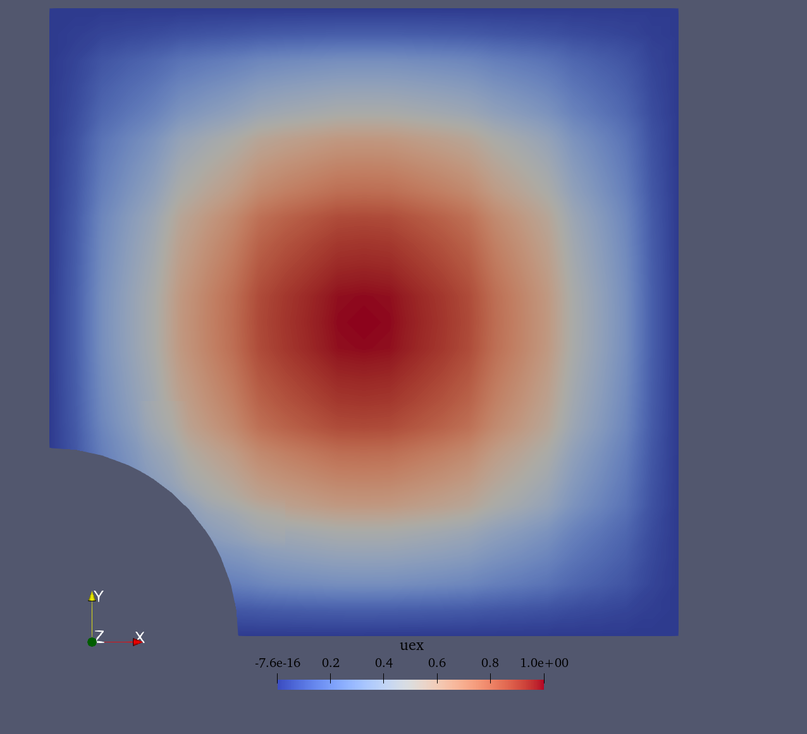
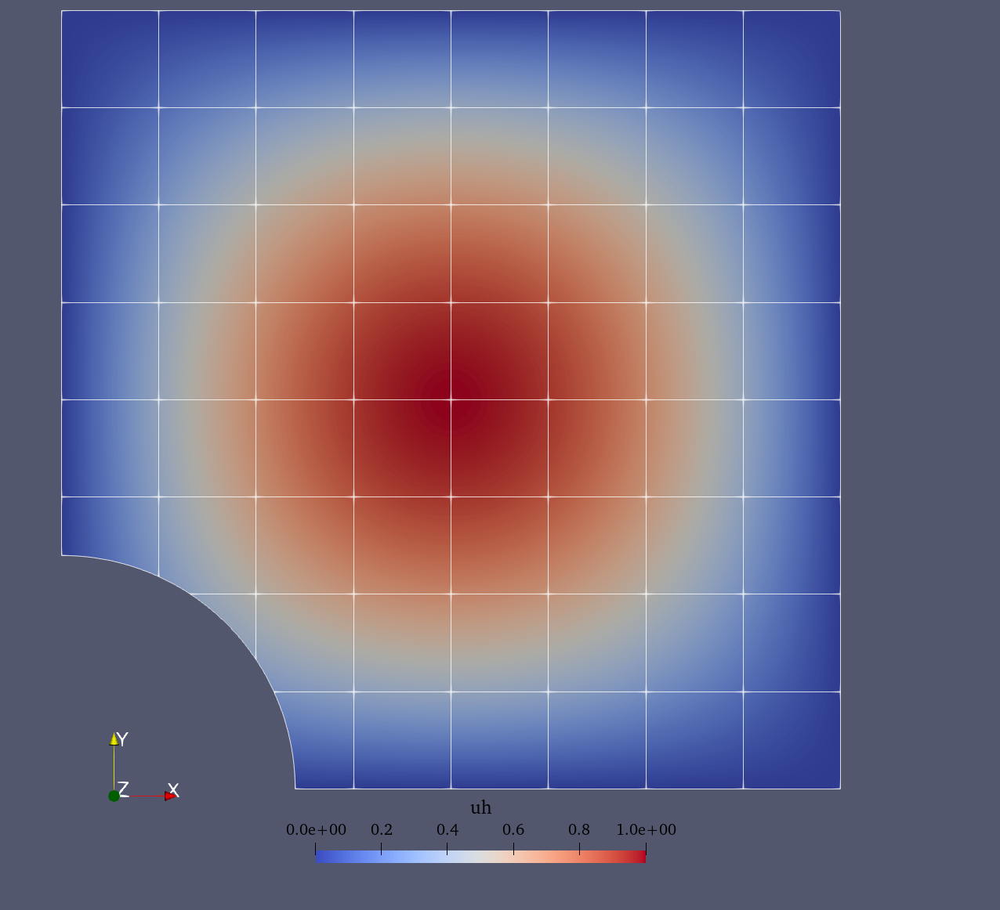

Poisson problem
This demo is implemented in demo_poisson.py. It
illustrates:
How to solve a simple PDE using QUGaR and FEniCSx.
How to impose Dirichlet conditions in a strong way.
How to impose Neumann condition on an unfitted boundary.
Problem definition
Let us consider the domain \(\Omega \subset \mathbb{R}^n\), immersed in a mesh \(\mathcal{T}(\Omega)\) (see Divergence theorem demo first for further details about the immersed setting), and the finite element space \(V\) defined over the mesh \(\mathcal{T}(\Omega)\). The Poisson problem reads: Finding \(u \in V\) such that
where \(f\) and \(g\) are input data and \(n\) denotes the outward directed boundary normal. The variational problem reads: find \(u \in V_D\) such that
where \(V_D\) is the space of functions that satisfy the Dirichlet boundary conditions, \(V_0\) is the space of test functions that vanish on the Dirichlet boundary \(\Gamma_D\), and \(a(u, v)\) and \(L(v)\) are the bilinear and linear forms defined as:
In this demo we consider a domain \(\Omega\) that is the classical plate with hole defined as a square domain \([0,1]^2\) and the hole has radius \(R=0.3\) and it is centered at \((0,0)\) (see the figure below). We consider that the Neumann boundary \(\Gamma_N\) correponds to the circular section of the boundary, while the Dirichlet boundary is its complement \(\Gamma_D=\partial\Omega\setminus\Gamma_N\).
For the Poisson problem we consider the following a manufactured solution (see figure below):
Plate with hole unfitted domain |
Manufactured solution |
|---|---|
 |
Implementation
Modules import
First we add the needed modules and functions:
from qugar.utils import has_FEniCSx, has_PETSc
if not has_FEniCSx:
raise ValueError("FEniCSx installation not found is required.")
if not has_PETSc:
raise ValueError("petsc4py installation not found is required.")
from pathlib import Path
from mpi4py import MPI
import dolfinx.fem
import dolfinx.fem.petsc
import dolfinx.io
import numpy as np
import ufl
from dolfinx import default_scalar_type as dtype
import qugar
import qugar.impl
from qugar.dolfinx import LinearProblem, ds_bdry_unf, mapped_normal
from qugar.mesh import create_unfitted_impl_Cartesian_mesh
Geometry and mesh
We define the plate with hole geometry as the the negative part of a disk of radius \(R=0.3\) centered at the origin.
radius = 0.3
disk = qugar.impl.create_disk(radius, center=np.array([0, 0], dtype))
impl_func = qugar.impl.create_negative(disk)
We create an unfitted Cartesian mesh
(corresponding to \(\mathcal{T}\)) in which we embed the domain \(\Omega\).
This is a Cartesian mesh corresponding to the domain \([0,1]^2\) and
with n_cells cells per direction.
n_cells = 8
unf_mesh = create_unfitted_impl_Cartesian_mesh(
MPI.COMM_WORLD, impl_func, n_cells, exclude_empty_cells=True, dtype=dtype
)
Spaces and functions
We create the manufactured solution, its gradient, and source term:
x = ufl.SpatialCoordinate(unf_mesh)
uex = ufl.sin(np.pi * x[0]) * ufl.sin(np.pi * x[1])
grad_uex = ufl.grad(uex)
f = -ufl.div(grad_uex) # -np.pi * np.pi * uex
and the finite element space \(V\) over the unfitted mesh
(corresponding to the mesh \(\mathcal{T}\)) needed to define the test
and trial functions \(u\) and \(v\).
The finite element space is defined as a Lagrange space of the given
degree (2 in this case).
degree = 2
V = dolfinx.fem.functionspace(unf_mesh, ("Lagrange", degree))
u, v = ufl.TrialFunction(V), ufl.TestFunction(V)
facets = dolfinx.mesh.locate_entities_boundary(
unf_mesh,
dim=(unf_mesh.topology.dim - 1),
marker=lambda x: np.isclose(x[0], 0.0)
| np.isclose(x[0], 1.0)
| np.isclose(x[1], 0.0)
| np.isclose(x[1], 1.0),
)
We now find the degrees-of-freedom that are associated with the
boundary facets using locate_dofs_topological:
dofs = dolfinx.fem.locate_dofs_topological(V=V, entity_dim=1, entities=facets)
and use dirichletbc to create a
DirichletBC class that
represents the boundary condition:
bc = dolfinx.fem.dirichletbc(value=dtype(0), dofs=dofs, V=V)
Note that for this particular solution, the exact condition is zero on \(\Gamma_D\).
Linear forms
We define the variational problem to be solved, which is
equivalent to the \(L^2\) projection of \(f\) onto \(V\), and generate
the corresponding bilinear and linear forms a and L using
QUGaR’s custom form functions.
The number of quadrature points per cell (or integration cell
in the case of cut cells) is set to degree + 1 to
prevent DOLFINx from using a higher-order quadrature rule
(because of the trigonometric right-hand side expression).
n_quad_pts = degree + 1
quad_degree = 2 * n_quad_pts + 1
ds_unf = ds_bdry_unf(domain=unf_mesh, degree=quad_degree)
g = ufl.dot(grad_uex, mapped_normal(unf_mesh))
a = ufl.dot(ufl.grad(u), ufl.grad(v)) * ufl.dx(degree=quad_degree)
L = f * v * ufl.dx(degree=quad_degree) + g * v * ds_unf
Linear system solution
We solve the associated linear system
\(A\mathbf{u} = \mathbf{b}\), where \(\mathbf{u}\) is the
solution of the problem. The solution is stored in a
a finite element function uh defined over the same finite
element space \(V\) as the trial functions.
In this case we use a direct solver (Cholesky) to solve the linear system. However, due to the potentially ill-conditioning of the matrix, we use a (symmetric) Jacobi preconditioner. It is known that Jacobi preconditioners are not very effective for Lagrange elements, but still help.
petsc_options = {
"ksp_type": "preonly",
"pc_type": "cholesky",
"ksp_diagonal_scale": True, # Jacobi
# "ksp_diagonal_scale_fix": True, # transformsa back A an b after Jacobi
}
problem = LinearProblem(a, L, bcs=[bc], petsc_options=petsc_options)
problem.solve()
uh = problem.u
Visualization
Finally, we visualize the obtained solution by generating reparameterization meshes and interpolating the solution into them. For further details check the Visualization section in the \(L^2\) projection demo. an auxiliar mesh that reparameterizes the unfitted domain.
rep_degree = 3
reparam = qugar.reparam.create_reparam_mesh(unf_mesh, degree=rep_degree, levelset=False)
rep_mesh = reparam.create_mesh()
rep_mesh_wb = reparam.create_mesh(wirebasket=True)
Vrep = dolfinx.fem.functionspace(rep_mesh, ("CG", rep_degree))
interp_data = qugar.reparam.create_interpolation_data(Vrep, V)
uh_rep = dolfinx.fem.Function(Vrep, dtype=dtype)
uh_rep.interpolate_nonmatching(uh, *interp_data)
uh_rep.name = "uh"
Vrep_wb = dolfinx.fem.functionspace(rep_mesh_wb, ("CG", rep_degree))
interp_data_wb = qugar.reparam.create_interpolation_data(Vrep_wb, V)
uh_rep_wb = dolfinx.fem.Function(Vrep_wb, dtype=dtype)
uh_rep_wb.interpolate_nonmatching(uh, *interp_data_wb)
uh_rep_wb.name = "uh"
Together with the approximate solution uh_rep, we also
interpolate the exact solution uex_rep into the reparameterization
mesh.
uex_rep = dolfinx.fem.Function(Vrep, dtype=dtype)
uex_expression = dolfinx.fem.Expression(uex, Vrep.element.interpolation_points())
uex_rep.interpolate(uex_expression)
uex_rep.name = "uex"
Finally, we export the meshes to VTK files and visualize them using ParaView (see the figures below).
results_folder = Path("results")
results_folder.mkdir(exist_ok=True, parents=True)
filename = results_folder / "demo_poisson"
with dolfinx.io.VTKFile(rep_mesh.comm, filename.with_suffix(".pvd"), "w") as vtk:
vtk.write_function(uh_rep)
vtk.write_function(uh_rep_wb)
vtk.write_function(uex_rep)
Approximate solution |
Exact (manufactured) solution |
|---|---|
 |